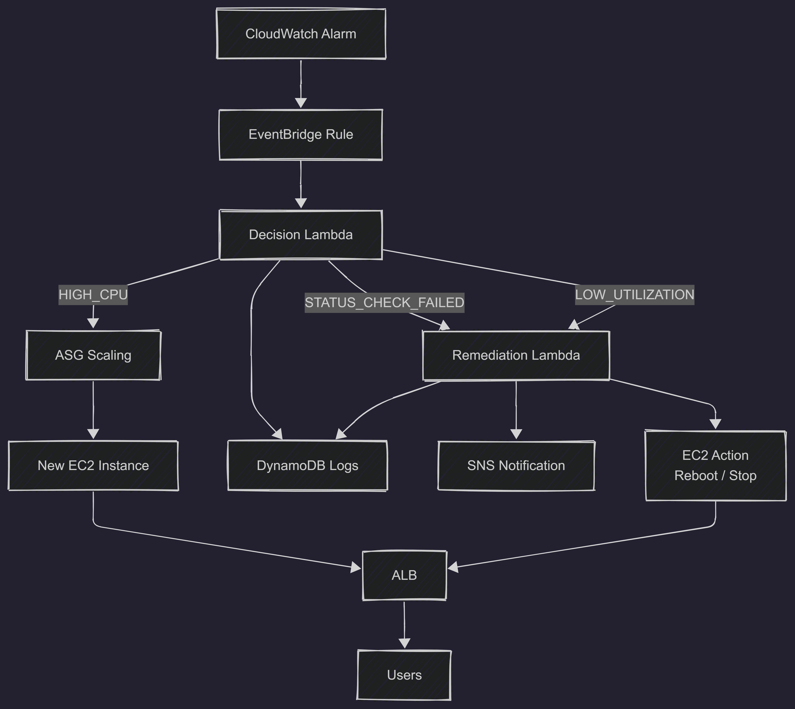
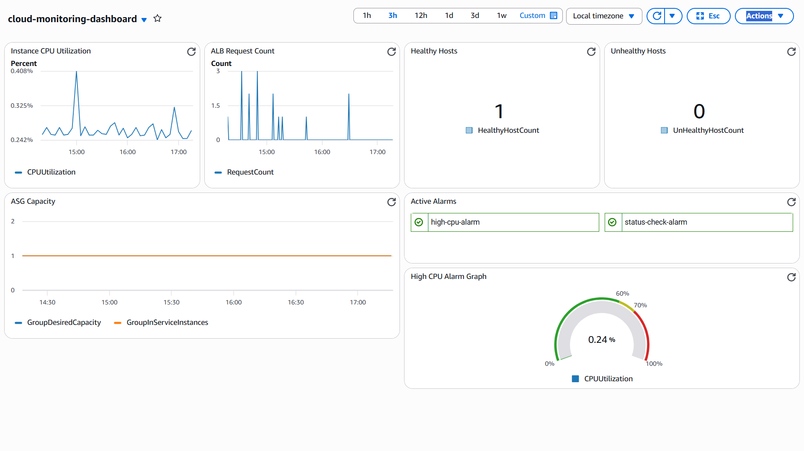
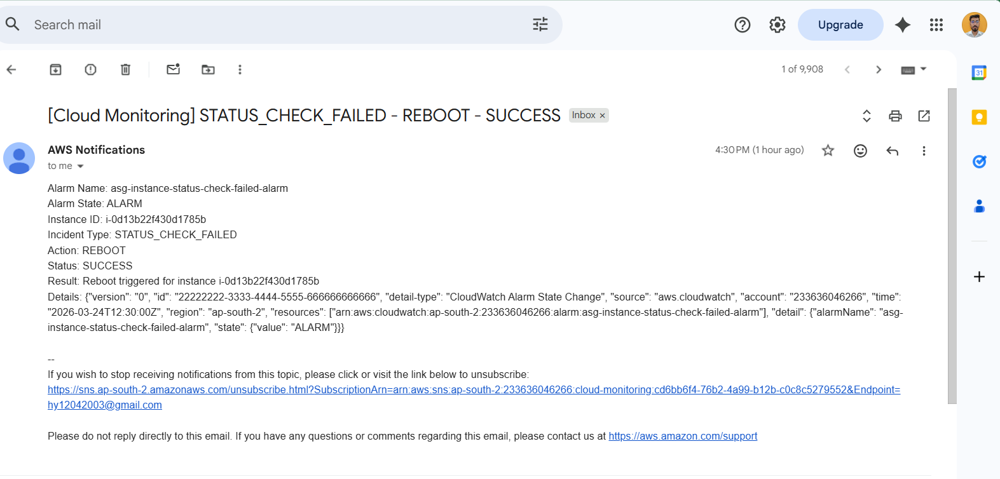
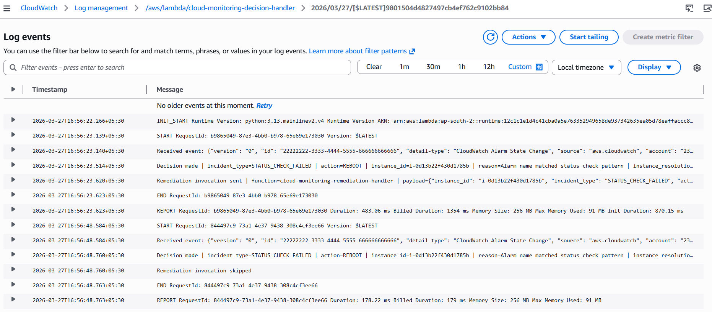

Event-driven monitoring
CloudWatch alarms feed incidents into EventBridge for realtime responses.
Real-time AWS monitoring system with automated incident detection, decision-making, and remediation.
Detects EC2 incidents with CloudWatch and automates resolution via EventBridge, Lambda, ASG, DynamoDB, and SNS.
This system provides cloud-native incident management for EC2 in an Auto Scaling Group: alarms trigger EventBridge, a decision engine runs in Lambda, and remediation actions are executed automatically while tracking state in DynamoDB and notifying via SNS.
CloudWatch alarms feed incidents into EventBridge for realtime responses.
Lambda functions execute corrective actions without manual intervention.
Duplicate alarms are suppressed to avoid repeated actions and alert fatigue.
HIGH_CPU incidents are scaled by Auto Scaling Group policies.
Incident decisions and actions are persisted for auditing and analysis.
Centralized metrics, alarms, and health overview for state visibility.

Action: SCALE_MANAGED_BY_ASG
Action: REBOOT
Action: STOP
Monitor metrics and define alarms.
Route alarm events into the decision workflow.
Decision engine and remediation actions.
Store incident decisions and cooldown state.
Notifications for operators and status updates.
Compute layer with scaling and traffic routing.


